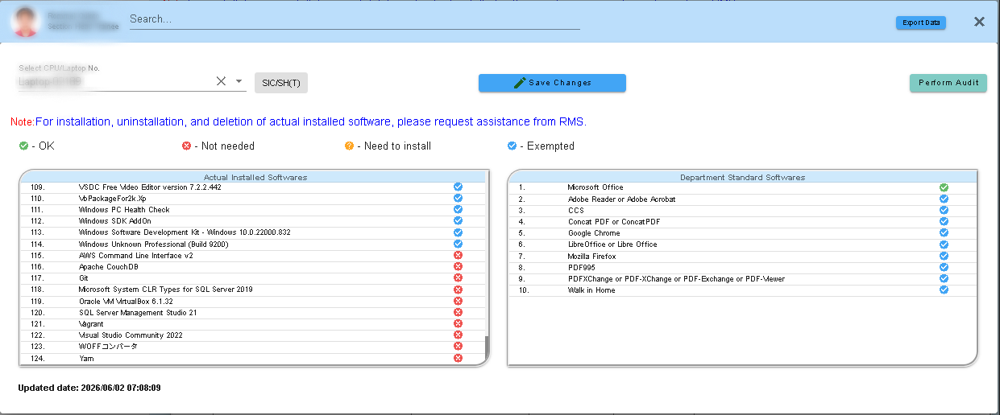
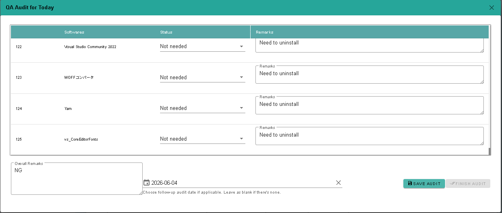
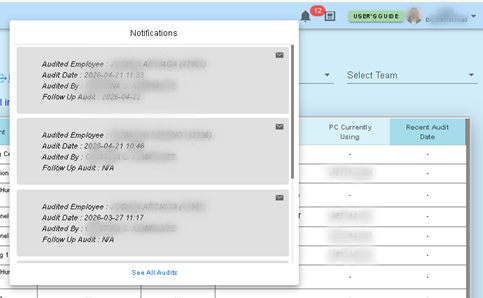

Dashboard

-
The PC Management Dashboard provides a centralized view of all employee computers, showing details such
as employee ID, department, team, job role, assigned PC, and recent audit date. It includes search and
filter options for departments, sections, and teams, along with a total PC counter. Leaders can easily
monitor usage, while audit notes and notifications ensure that software installations and compliance are
properly tracked.
Accounts Page

-
The Dialog Page provides a detailed comparison between the actual installed software on a selected laptop
or PC and the department’s standard software list. Each item is marked with a status indicator — green for OK,
red for Not Needed, orange for Need to Install, and blue for Exempted. Leader accounts can save changes or export
data directly from this page, while member accounts are limited to viewing only. QA accounts are responsible for
performing audits and sending notifications. This role‑based access ensures that leaders and auditors can track
compliance and software changes accurately.
List Unsused PC/Laptop

-
Left‑panel interface displays unused laptops organized by PC number, company, department, and section.
Right‑panel table shows “Actual Installed” software per device, including operating systems.
Audit Interface

- ◉ On the left side of the table, you see the list of software items being checked.
- ◉ Status column indicates whether each program is allowed or not (e.g., Not Needed).
- ◉ Remarks column is where auditors specify the corrective action, such as Need to uninstall.
Notification Panel
